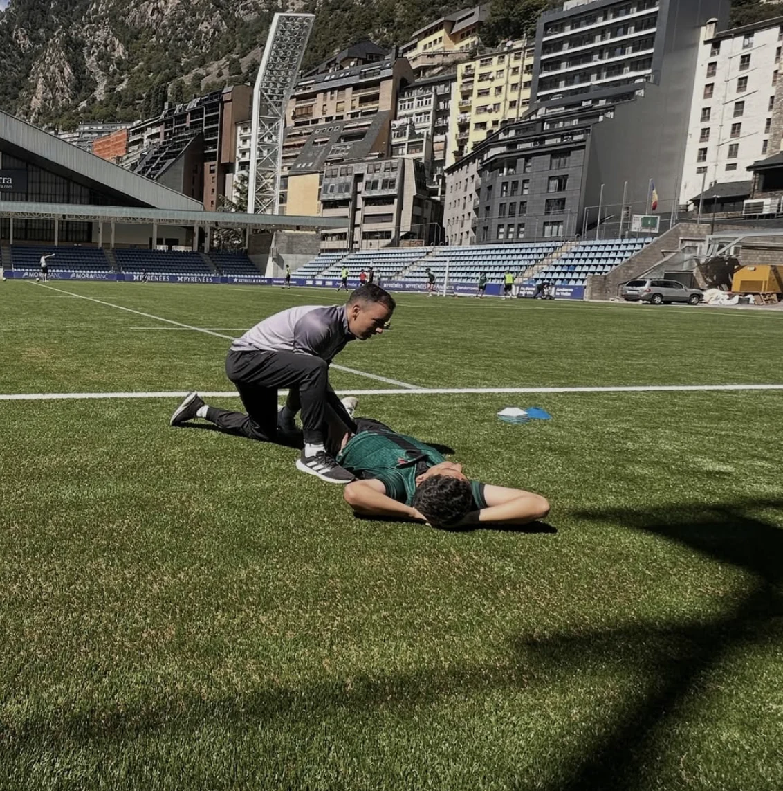
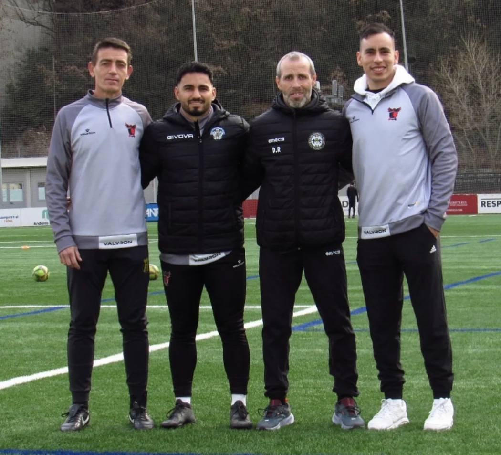

Una visita a Oreka
Del octágono
a Oreka.
«Ayer me dejó como nuevo»
El peleador de MMA de la foto, ganador del Infierno GDL Championship en Guadalajara, compartió esta historia tras su visita.
Ver a Oreka en InstagramFisioterapia en Zapopan, Jalisco
Fisioterapia para el dolor y las lesiones deportivas. Recupera movilidad y vuelve a entrenar con confianza.
Agendar valoración Conoce el proceso
Tu recuperación
La recuperación empieza en la camilla, con una valoración de tu movimiento.
Vuelve a dar pasos con más confianza, a tu ritmo.
Añade carga de forma gradual con ejercicios ajustados a tu recuperación.
Fisioterapia deportiva
El fútbol exige frenar, girar, acelerar y volver a hacerlo. Tu recuperación puede incorporar esos movimientos según el punto en el que estés.

Una visita a Oreka
«Ayer me dejó como nuevo»
El peleador de MMA de la foto, ganador del Infierno GDL Championship en Guadalajara, compartió esta historia tras su visita.
Ver a Oreka en InstagramDónde estamos
Un consultorio dentro del complejo de fútbol, en la zona de El Bajío.
Soccerlife Bajío 3Av. Circunvalación del Bosque 138, 45017 Zapopan, JaliscoLunes a viernes 8:00–20:00 · Sábado 8:00–14:00 · Domingo cerrado.
Cómo llegar Ver en Google MapsValoración inicial
Elige un día y un turno de una hora para probar cómo se agenda.
Turnos de una hora en horario de Zapopan. Disponibilidad simulada.